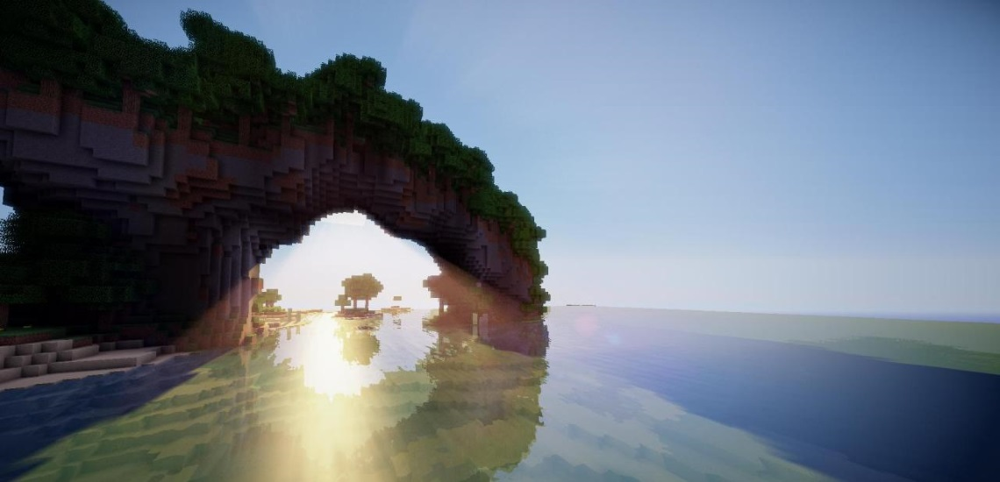
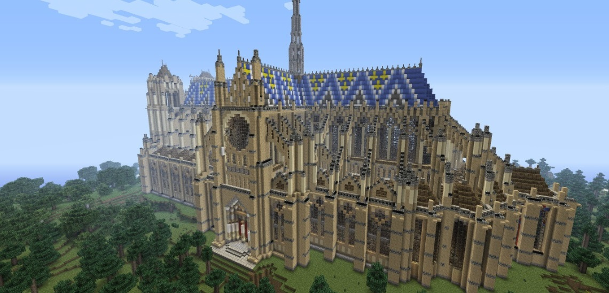

Pilgrims

Description:
Sail to new lands and learn to start from scratch. You will be free of oppresive leadership but also lack the benefits that come along with civilization.
Goals:
- Land Ho: Arrive on a shore that appears to not be a small island
Reward: 5 Steak, 1 Map
- Supply Ship: Survive 3 nights in the new land
Reward: 30 Iron Ingot
- Explorers: Fill out the map from Land Ho
Reward: 10 Diamonds
- Native Knowledge: Plant 30 crops
Reward: 10 Steak
- Great Hall: Build a 50x50 circular, domed building
Reward: 10 Bread, 10 Apple, 10 Chicken, 10 Pork
- Prosperity: Build a village with 15+ buildings
Reward: 20 Diamonds
Setup:
1 Boat for each person, start without land in sight
Story:
Whether ostracized from normal society, looking for adventure, or even simply a fresh start, the life of a pilgrim is one for you. Report to dock 18 if you think you will be a good candidate for pilgriming. Explore new land and bring even more glory to your great homeland.
Crusaders

Description:
Establish a missionary cathedral in newly explored lands and spread the holy word to the inhabitants. Those unwilling to listen shall be smitted and laid to rest. You will start small in a modest chapel, with barely even room to sleep. But God-willing, you shall expand and convert all those around.
Goals:
- Grow the Flock: Build a church of wood at least 30x30 with 10 rows of benches
Reward: 10 Steak
- Smite the Wicked: Collect 10 ender eyes as proof of their demise
Reward: 10 Diamonds
- Extravagance: Build a stone cathedral at least 80x50 with 20 rows of benches and 5 stained glass windows
Reward: 30 Diamonds
- Christo De Redentor: Build a cross 20 blocks high on the largest mountain in sight. Minimum altitude: 50
Reward: Gold Armor Set
- Why Wouldn't They Listen?: Purge a village of all villagers
Reward: 10 Obsidian Block, 1 Flint
- Enlightened: Create a library in your church/cathedral with at least 10 bookshelves
Reward: Enchanting Table
Setup:
Small chapel, four beds, nearby mountains
Story:
Go forth brothers, explore new lands, convert the inhabitants, and cleanse the unwilling. Pope Alexander XVI commissions you to go to unknown regions in the ultimate show of faith. Crusade throughout the land and never forsake your true purpose.